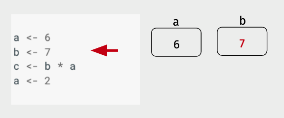
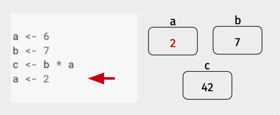
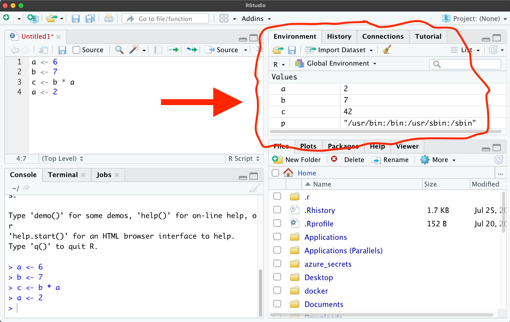

Intro to R¶
In this first tutorial, we’ll cover the very basics of R, including installation.
If you’ve worked with R before, you will probably want to move through this quickly. With that said, I would still encourage you to read it as you may find this reading provides new ways of thinking about concepts you have seen before.
Installing R¶
Everything we do in this course we’ll be doing using the free! open-source programming language R.
But the way we’ll mostly use R is with an application called RStudio. RStudio is a “helper” program that makes it easier to work with R (it is what is referred to as an “editor” or “integrated development environment” (IDE)). When you’re working in RStudio, all the code you run is being run by R itself, but RStudio provides tools to make it easier to see what R is doing, to organize the code your write to run in R, to look at plots R generates, and more. In other words, you don’t need RStudio to use R (some people use other editors, like VS Code), but you definitely need R to run RStudio, and any code you write in RStudio will work anywhere R is available.
For an installation tutorial and introduction to RStudio functionality, please go watch this video, then come back here.
Code Examples On This Site¶
On this website, you’ll find that code examples don’t look quite like they do when you’re typing in R yourself. Instead, you’ll see code appear in grey blocks with a number on the left side. Below these blocks, you will see the output R has returned after running that code. For example, here’s that same "Hello!" line in the style used on this site:
[1]:
"Hello!"
In addition, some code will include “comments”. Comments are notes placed in someone’s code to explain what’s going on to other programmers. Comments always start with a # in R, which tells R that the text that follows is not something it should try and execute. Comments will always appear in italics and in a different color.
[2]:
# This is a comment. In the next line, I'll add 2 and 3.
2 + 3
Basic Math in R¶
As you saw in the RStudio welcome video above, we can run code in R from RStudio either by:
putting our cursor on a line / highlighting a line and pressing
command-enter(on a mac) orcontrol-enter(in Windows), ortyping directly into the R console window and pressing return,
at which point that line of code will be executed in the R console.
Now that we’ve learned how to execute code in R, we can start asking R to do things for us. For example, R can do all the normal math operations you are familiar with:
[3]:
# Addition
2 + 2
[4]:
# Multiplication
2 * 3
[5]:
# Division
4 / 2
[6]:
# And even exponentiation (e.g. 2 raised to the third power)
2 ^ 3
[7]:
# R can also do logical comparisons
5 < 7
[8]:
3 >= 5
Variables¶
Congratulations! You now know how to do math in R!
If we want to do more than use R as a calculator, though, we need to be able to store the results of our calculations. That will allow us to reuse those results in the future, or combine the results of different calculations. In the examples above, R did the math we asked it to do, and printed out the results, but it didn’t store a copy of those results anywhere.
In order to store the result of a calculation, we need to assign it to a variable. We do this with the assignment operator: <-.
For example, if we wanted to assign the value of 6 to the variable a, we’d type:
[9]:
a <- 6
Then if we asked R for the value of a, we’d get that 6 back:
[10]:
a
And if we tried to do math with a, R would treat that variable a as though it were 6:
[11]:
a * 2
A Variable is a Box¶
So what is a variable? A variable is a box that stores a value. And assigning a value to a variable is how we put a value in the box.
To illustrate, let’s step through a few lines of code and illustrate what’s going using this idea of a variable as a box. In particular, let’s walk through the following code to see what’s happening on each line:
a <- 6
b <- 7
c <- b * a
a <- 2
Here, in the first line, we’re assigning the value of 6 to a, so as we see R is putting a 6 in the box labelled a.

Then R does the same thing with b, putting the assigned value of 7 in a box named b.

Now things get a little more interesting. Instead of a single value being assigned to a variable, we now have an expression on the right side of the assignment operator. The way R handles this is by first evaluating the expression on the right side of the assignment operator (<-), then assigning it to the variable.
Note there’s something a little weird about this: even though most of us are used to reading from left-to-right, R evaluates the expression on the right first, then assigning it to the variable on the left.

Finally, we see an example of re-assignment – here a new value is assigned to a (2), and that value overwrites the old value that was in the box a. The old value (6) has been lost by this re-assignment, it’s job done.

This method of reading code may seem unnecessarily complicated, but as we’ll see when we return to this way of writing out code in a few lectures, it is an extremely powerful approach.
Indeed, this idea of variables as boxes is so fundamental to programming that it’s even embodied in RStudio. If you look at the top right corner of RStudio, you’ll find a tab called “Environment”. That tab displays all the variables defined in the current session of R. And if you run the code we just worked through, you’ll see that it displays the values of a, b, and c basically the same way we wrote them above: as values in boxes with the variable name next to them as a label! (Don’t worry if you don’t have that p variable in your RStudio – that’s just a variable my R session loads automatically on startup.):

NOTE: There are actually two ways to assign a value to a variable name in R.
The first, which we will use in these tutorials, is to use a less than sign and a dash to create an arrow (<-):
x <- 42
and the second is to use a single equal sign (=):
x = 42
When R was first created it only supported the <- operator, but most other languages use = is the assignment operator, so eventually R decided to support both, so you can use them interchangeably.
However, be aware that most style guides for R still suggested that the <- operator is the preferred choice (though I will admit that I often just use = in my own code… ;)).
Checking Variable Values¶
One way to see the value of variables is to just look at “Environment” tab in RStudio, as shown above. But while this is a nice feature of RStudio – and sufficient in many cases – it’s good to know how to get the values of variables directly in the R console.
There are two ways to see the value of a variable in R:
Type in the variable name (or any other expression) without assigning it to a variable.
Use the
print()statement.
The first is what we were doing at the top of this tutorial – if you run a line of code and don’t assignment to a variable, then R will evaluate the expression and print out the result. This is true whether the expression is just the name of a variable (e.g. if you run a, R just prints the value that’s been assigned to a), or something more complicated ((a * 123) / 42).
[12]:
z <- 42
z
The second option is to use the print() function in R. Basically, any expression you put between the two parenthesis of the print function will get printed out. For simple scripts like what we’re writing now, there’s rarely a reason to use print() instead of typing out the expression you want evaluated and printed, but it’ll become really useful later when we write some fancier code!
[13]:
print(z)
[1] 42
Order of Evaluation¶
As noted above, the way that R evaluates a line of code is by (1) evaluating the expression on the right-hand side of the assignment operator, then inserting that value into the box associated with the variable on the left-hand side of the assignment operator.
Given that, can you predict what the value of a will be after the following code is run?
[14]:
a <- 4
a <- a + 1
If you said 5, you’d be right! Even though a is on both sides of the assignment operator, because there’s a clear order-of-operations, there’s no ambiguity in the result.
When the expression on the right-hand side is more complex, R will evaluate it using the same order of operations you learned in high school math (parenthesis, exponents, multiplication and division, addition and subtraction, or PEMDAS). So R will parse the following code:
[15]:
5 + 2 * (20 - 2)
By evaluating things in parentheses, then any multiplication/division operations, and then any addition, subtraction operations:
5 + 2 * (20 - 2)
= 5 + 2 * 18 # Parenthesis evaluated
= 5 + 36 # Multiplication evaluated
= 41 # Addition evaluated.
NOT left-to-right:
5 + 2 * (20 - 2)
= 7 * (20 - 2)
= 7 * 18
= 126
Functions¶
The last thing to talk about in this reading is one of the most useful concepts in computer science: the function!
Functions are small packages of code that take inputs from the user, do some manipulations with those inputs, and return a result. For example, sqrt() is a function that calculates the square root of a number. To use it, you “pass” a number to the function by putting between the two parentheses that follow the function name, and it returns the square root of that number:
[16]:
sqrt(9)
The inputs you pass to a function are called “arguments,” and whatever the function returns to you is called the “return value.”
Different functions may take different numbers of arguments. The function choose(), for example, calculates the number of ways that you could pull N items from a collection of K total items.
To illustrate, suppose we wanted to know how many five card poker hands we could make from a deck of 52 cards (If you’ve taken probability, you’ll recognize this as a way of doing combinatorics!)
The function choose() takes 2 arguments: the first is the total number of items (52 cards, in our example), and the second is the number of items you want to draw (say, 5 cards). So to answer our question, we’d type:
[17]:
choose(52, 5)
Some functions also have optional keyword arguments. To use these optional arguments, you have to type the name of the argument and = before you put in a specific value. For example, R has a function called round that rounds off numeric data. By default, round will round numbers off to the nearest integer (i.e. no decimal places):
[18]:
round(3.141592653589793)
But it accepts a keyword argument called digits that allows you to change its behavior. For example, if I wanted pi rounded to 2 decimal places, I could type:
[19]:
round(3.141592653589793, digits = 2)
How do you know what arguments a function takes? Every (well-written) function comes with documentation! Just type ?function_name in R, and you’ll see it’s documentation. For example, here’s the (abridged) documentation for round, which has a section called “arguments” that tells you about the digits keyword:
> ?round
Round package:base R Documentation
Rounding of Numbers
...
Arguments:
x: a numeric vector. Or, for ‘round’ and ‘signif’, a complex
vector.
digits: integer indicating the number of decimal places (‘round’) or
significant digits (‘signif’) to be used. Negative values
are allowed (see ‘Details’).
...: arguments to be passed to methods.
To get out of one of these help files, type ``q``
Assigning Return Values¶
Just like any other expression, if you ask R to evaluate a line of code with a function in it and don’t assign that value back to a variable, that return value gets printed out and immediately forgotten. So if you want to keep the result of a function, remember you always have to assign it to a variable. e.g.
[20]:
# Let's get the value of 7!
# (e.g. 7 x 6 x 5 x 4 x 3 x 2 x 1, also known as 7 factorial)
a <- 7
a_factorial <- factorial(a)
[21]:
a_factorial
Evaluating Nested Functions¶
Functions can also be nested, in which case R just evaluates them from the inside out. For example, can you figure out what this code would return (abs returns the absolute value of the input)?
a <- -9
b <- sqrt(abs(a))
?
Let’s run it and find out:
[22]:
a <- -9
b <- sqrt(abs(a))
b
R evaluates the expression sqrt(abs(a)) by starting at the innermost level and working its way out, effectively saying: “well, a is -9, so abs(a) is abs(-9). And that’s 9. So then sqrt(9) is 3.”
How Do Functions Work?¶
There’s nothing magic about functions – they’re just bundles of code in a neat little package. Indeed, later in this course we’ll show you how to write functions of your own!
But you also shouldn’t worry about the fact that you can’t immediately see the code that is making a function like sqrt() work. In fact, this is the best thing about functions – you don’t actually need to know what’s going on inside the function. You only need to know the arguments you need to pass to it to get back the thing that you want.
In this sense, a function is kind of like a toaster: you put bread in, you get toast back; how the toaster is turning the bread into toast isn’t really something you need to worry about. I think that my toaster is making toast by running electricity through metal wires until they heat up, but if it turned out that my toaster were actually capturing the energy of passing cosmic rays, it wouldn’t change the way that I make my breakfast – I would still put bread in, get toast back, and eat. And functions are the same way!
Recap¶
At the end of each of these tutorials, I will write a little recap of the lessons we’ve covered. Part of this is to help you, the learner, remember which points are most salient. But it’s also to help provide you with a summary of all the syntax – the specific way we write code to do certain things – we’ve learned in one place so you don’t feel anxious about remembering it as we go. In general, the least important thing to learn in programming is the specifics of how the code is written – that’s something you can always google. What’s important to learn are the concepts and the logic of how the program works.
Variables are boxes that store data.
To save the results of a calculation, you have to assign it to a variable.
Assignment in R can be done with either
<-or=.You can check the value assigned to a variable or result of an expression by typing it without assigning it, or using
print().Functions are just bundles of code that take certain inputs (arguments) and give you back a result (the return value).
Different functions accept different numbers of arguments, and some keyword arguments are optional.
Function help can be found with
?function_name. Useqto get out of the help file.
Next Steps¶
Congratulations! You now know the basics of how a programming language works. In our next reading, we’ll discuss some of the ways data can be represented within R, after which we’ll do a handful of exercises so you can practice variable assignment and using functions.
If you’ve never worked with the programming language before, this may feel like a lot – don’t worry! We will have lots of opportunities to practice what you’ve read, and I don’t expect you to feel comfortable with any of this until you’ve had a chance do some exercises. Programming is a skill that you learn by doing.
If you have worked with R before, I recognize that this might feel a little slow – please bear with me! Our goal in this course is to ensure everyone has a solid foundation in R, which means the first couple readings may be review for some of you. We’ll get into material I feel confident will be novel soon.
Where’s the Social Science?¶
It’s normal at this point to find yourself saying “wait… this isn’t what I signed up for when I chose to pursue social science! This feels like computer science.” Hang in there – I promise we’ll get to good, applied social science examples within a couple classes.
No discipline is changing faster than data science / computational social science. As a result, I don’t want to just teach you how to chain together a handful of specific functions to do basic data manipulations. That might be the faster path to getting to work with social science datasets, but when those functions change in the future (which they inevitably will), or your research demands you move on to other tools, you won’t have the understanding of how R works required to adapt.
But by learning the fundamental principles of how programming languages work, you’ll develop a more robust, less “brittle” skill set that will provide you with a solid foundation for learning new tools over the course of your entire social science career. It may feel a little slow at first, but I promise it’ll pay off over the years.
Try it Yourself!¶
We’ll do more exercises in class (that’s what it means for us to be doing a flipped classroom!), but if you want to try practicing these skills, here are a few short exercises:
Assign the numeric value 42 to a variable called
the_answer.Now create a new variable (you can call it whatever you want) that is equal to double
the_answer.Use
print()to print out the value ofthe_answerCreate a new variable called
answer_divided_by_9that isthe_answerdivided by 9.Using
print()andround(), print outanswer_divided_by_9rounded to two decimal places.Now create a variable called
answer_divided_by_5that’sthe_answerdivided by 5. Use round to print outanswer_divided_by_5to two decimal places. Did it work as you expected? Can you tell why things came out differently?